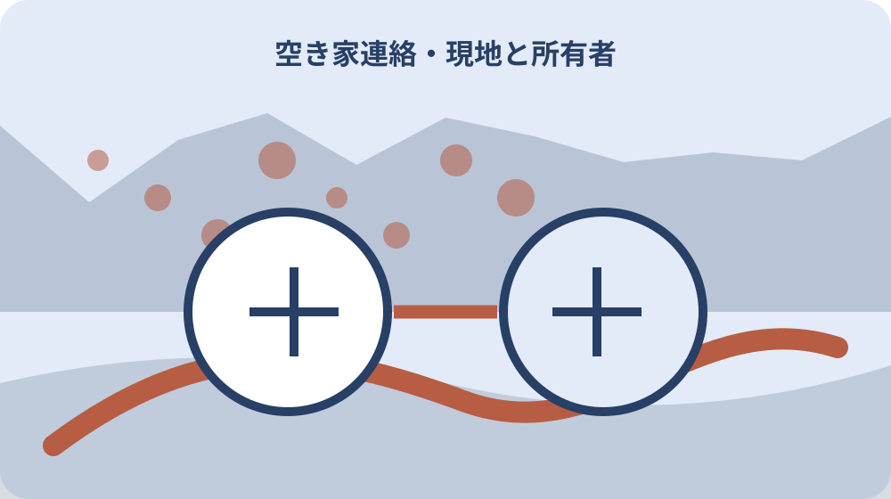

先に結論を確認する
この記事の答え：物件番号、所有者側の受付、第二連絡先、現地確認者、緊急時は119・110を優先すること、伝えてほしい観察項目、更新日を載せます。鍵番号や相続資料など不要な個人情報は載せません。
森町で最初に照合する条件：町が物件管理を行わないことを前提に所有者側の担当を決める
異常を見つけた人から所有者へ届く一件カードを作る
森町の空き家で近隣の人が瓦のずれ、枝の越境、漏水らしい音などに気づいても、所有者へ連絡が届かなければ確認が遅れます。所在地、建物、所有者、家族担当、現地確認者、専門業者、緊急連絡先を一件カードへまとめます。
この記事の答えは、近隣の人には見えた事実、場所、時刻、危険の有無だけを無理のない範囲で伝えてもらい、所有者側が受領、現地確認、専門判断、対応結果を引き継ぐことです。近隣の人を空き家の管理者にはしません。
表紙には所在地、地番、目印、所有者の代表連絡先、つながらない場合の家族連絡先、鍵を扱える現地担当、最終更新日を置きます。個人の電話番号を誰にでも見える場所へ掲示する前提にはしません。
Day53の危険空き家記事は町から所有者へ連絡が来た後の初動、Day57は工事後の修繕履歴でした。本稿は異常が起きる前に連絡経路を合意し、観察情報を担当者へ渡す仕組みに限定します。
完成条件は電話番号を並べることではありません。誰が最初に事実を受け、誰が現地を確認し、どの状態なら119や110へ直接通報し、平常時の相談はどこへ回すかを読める状態です。
最初の版では実際に連絡可能な番号だけを登録します。念のためという理由で親族全員を載せず、第一受付から第二受付へ切り替える条件を決め、応答を確認した日も表紙へ残します。
町・所有者・近隣・業者の役割を混ぜない
森町の空き家・空き地バンクは、町が物件の管理を行わないと明記しています。バンク登録中でも、見回り、草木、建物、設備の管理を町が代行すると考えず、所有者側の担当を決めます。
森町の第2期空家等対策計画は、空き家が周辺の生活環境へ悪影響を及ぼすことの解消と利活用を扱っています。計画があることと、個別物件の日常管理を町が引き受けることは同じではありません。
近隣の人は、道路側から見えた変化を知らせる協力者です。敷地へ入る、屋根へ上る、止水栓を操作する、動物を追い出す、枝を切るといった作業を当然の役割にしません。
現地確認者には、鍵の権限、立入範囲、確認項目、費用の扱い、所有者へ返す報告を決めます。修繕業者には専門判断と見積りを依頼し、近隣の目視情報だけで原因や工法を決定しません。
町へ相談する場合は、相談日、担当課、伝えた事実、案内された次の窓口を記録します。町への相談と消防・警察への緊急通報、所有者への修繕依頼を一つの電話先にまとめません。
役割表には、観察、受領、立入、鍵、見積り承認、支払い、町への相談を横に並べます。同じ人が複数を担う場合も欄を省かず、できない作業と代理先を明記します。
近隣へ渡す情報を必要最小限にする
近隣協力者へ渡すのは、物件を特定できる名称、所有者側の受付番号または連絡手段、緊急時は119・110を優先すること、伝えてほしい観察項目です。相続資料、身分証、口座、鍵番号は渡しません。
連絡先を共有する前に、本人の同意、共有相手、利用目的、更新日を確認します。家族の電話番号を本人に知らせず町内会名簿や掲示物へ載せるような運用は避けます。
紙カードには紛失時の影響を考え、住所全体や個人情報を詰め込みません。物件番号と受付連絡先を中心にし、詳細台帳は所有者側が別に保管します。
メールやメッセージでは写真に隣家内部、人の顔、車両番号が写っていないか確認します。必要な場所だけを写し、広い範囲の画像を無期限に共有しません。
協力を断る人や連絡できない時間帯がある人も想定します。近隣一人へ依存せず、所有者、家族、現地管理者、業者の複数経路を用意し、毎回の監視を求めません。
近隣用カードを封筒で渡す場合は、利用目的、廃棄方法、差替え時の返却先を書きます。所有者の都合で協力関係を終了するときも、古い連絡先が残らないよう回収を依頼します。
見えた事実と推測を分けて受け取る
連絡メモは発見日時、発見場所、見えた状態、音や臭い、道路や人への危険、写真の有無、通報済みかを分けます。『雨漏りだ』『倒壊する』という原因や結果を、遠目の観察だけで確定しません。
屋根材なら落ちた物の位置、数量、道路への飛散、建物のどの面かを聞きます。枝なら道路や電線への接近、折れ、通行障害を記し、木全体の健全性は専門家へ渡します。
水の場合は見えた場所、流量の変化、道路への流出、音、メーター周辺かを記します。所有者が遠隔で元栓操作を求めず、安全に権限を持つ担当者へ確認を依頼します。
臭い、害虫、動物は発生日、範囲、継続、周囲への影響を残します。刺激物や巣へ近づかず、駆除方法を連絡者へ判断させません。
受領担当は、連絡者の言葉を勝手に強めたり弱めたりせず、引用部分と所有者の判断を別欄にします。追加確認が必要なら、危険な接近を求めず質問だけを具体化します。
写真がない連絡も受け付けます。撮影のために道路へ出る、夜間に近づく、私有地へ入ることを求めず、通行中に安全な場所から分かった内容だけで一次受付を開始します。

119・110と平常時連絡の境目をカードに置く
火災、煙、負傷者、倒壊など生命や身体へ差し迫る危険がある場合は、所有者への順番待ちをせず119へ通報する前提をカードへ書きます。事件や不審者など警察の緊急対応が必要な場合は110です。
森町の主要施設一覧は袋井消防署森分署と袋井警察署森分庁舎の一般連絡先を掲載しています。ただし火災や事件の緊急通報番号と一般問い合わせ先を置き換えません。
緊急か迷う状況を近隣の人へ独自判断させるのではなく、目の前の危険は公的緊急窓口へ伝えてもらいます。所有者カードは通報後に物件情報や鍵担当を伝える補助資料です。
緊急性のない外壁の傷み、草木、郵便物、設備異常らしい変化は所有者受付へ送ります。受付担当は現地確認期限を決め、放置や安易な緊急通報のどちらにも偏らないようにします。
通報や連絡の記録には日時、窓口、伝えた内容、受付番号、指示、所有者への伝達時刻を残します。録音や相手の個人情報の扱いは適用されるルールを確認し、無断公開しません。
一般電話へ相談した結果、緊急通報を案内された場合はその指示に従います。カードの分類は通報を制限する規則ではなく、連絡者が所有者の返事待ちで危険対応を遅らせないための目印です。
現地確認者へ安全な確認範囲を渡す
現地確認者には、道路や門外から見る項目、敷地内で確認できる項目、専門業者を呼ぶ項目を分けます。高所、崩れ、漏電、ガス臭、動物など危険がある場所へ入らない停止条件を明記します。
鍵を預ける場合は鍵番号、受渡日、保管者、利用目的、返却日を所有者台帳へ残します。近隣協力者に常時の鍵管理まで求めず、契約した管理者や家族との役割を区別します。
確認写真は外観の方角、部位、撮影日時を付けます。変化が分かるよう以前の写真と同じ位置を参考にしますが、危険な場所へ同じ構図を撮りに行く必要はありません。
確認後は異常なし、変化あり、専門確認待ち、緊急対応済みを分けます。異常なしは建物全体の安全証明ではなく、決めた範囲をその日に見た結果です。
交通費や作業費が発生する担当には、依頼範囲、上限、追加承認、領収書を事前に決めます。善意の近隣連絡と有償管理契約を混同しません。
現地担当が到着できない場合は、その事実と次に依頼した相手を記録します。到着予定だけを対応済みにせず、確認写真または専門家の報告を受けた時刻まで追跡します。
国の管理指針を観察項目へ落とす
国土交通省の管理指針は、建物全体の傾き、外装材や窓、屋根材、屋内、排水設備、敷地、門・塀・擁壁、立木、動物などを点検対象の例として示しています。
同指針は外装材や屋根材の剥落・破損、擁壁のひび割れ、立木の腐朽や枝のはみ出し、ごみの散乱など、周囲へ影響し得る状態を挙げています。連絡カードの観察分類へ使えます。
国の例は近隣の人が専門点検を行う義務を示すものではありません。所有者が点検・補修を組み立てる資料として使い、近隣からは外から見えた変化だけを受け取ります。
定期確認では建物、屋根外壁、排水、敷地、門塀、立木、動物の順にチェック番号を付けます。前回と違う項目だけでなく、見られなかった項目も未確認として残します。
遠隔地で自ら管理が難しい場合、国土交通省の特設サイトは空き家管理業者や修繕業者の利用検討を案内しています。依頼先の範囲、報告、費用は個別に確認します。
管理指針の項目をすべて毎回見るのではなく、季節や前回の異常に合わせて確認表を組みます。ただし対象外にした理由と次回確認月を残し、見なかった項目を正常扱いしません。
連絡を受けた後の期限と担当を決める
所有者受付は受信直後、当日中、数日以内など状態に応じた確認期限を決めます。ただし公的資料が一律の日数を定めたと誤解せず、危険度、天候、現地担当、業者の回答を基に案件ごとに設定します。
最初の受領者が不在なら家族第二連絡先へ回し、それでもつながらない場合の管理会社等を決めます。近隣の人が何度も電話をかけ続ける運用にはしません。
受信後は受付、現地確認依頼、現地確認、専門相談、応急対応、本修繕、結果連絡を別行にします。対応中という一語で、誰の作業を待っているか分からなくなるのを防ぎます。
危険が解消するまでの応急措置は、権限と安全を持つ業者等へ相談します。近隣へカラーコーン設置や落下物撤去を当然に頼まず、道路等へ影響する場合は所管へ状況を伝えます。
完了時は何を確認し、何が未確認で、次にいつ見るかを連絡者へ必要な範囲で返します。工事費や家族事情など、連絡の目的に不要な情報は伝えません。
対応期限を過ぎた案件は、担当者を責める連絡ではなく、未確認の理由、代替担当、天候、安全条件を見直します。連絡者へは放置していないことと次の確認予定を必要範囲で返します。
連絡不能・所有者変更に備えて更新する
電話番号が変わる、所有者が亡くなる、家族担当が交代する、管理契約が終わると連絡網は機能しません。年一回と変更発生時に、各連絡先へ利用継続の同意を確認します。
相続や売買で担当が変わる場合、旧所有者の連絡先を残したままにしません。権利関係の確定資料とは別に、実務上の受信担当、鍵担当、業者契約、近隣への案内を更新します。
連絡先が一時的に決まらない場合は、未定と更新予定日を記します。近隣に古い番号を使わせるより、家族の代表受付を一時設定し、期限を決めて見直します。
紙カードを差し替えたら旧版を回収し、版番号と配布先を記録します。デジタル共有も閲覧者と期限を見直し、旧担当の権限を外した日を残します。
長期間連絡がなかったことを、空き家に異常がなかった証明にはしません。所有者側の定期点検と、近隣からの臨時連絡を別の経路として維持します。
所有者変更時は新しい担当の同意が取れるまで、旧所有者の個人情報を自動転送しません。売買や相続の正式資料と、近隣へ知らせる受付先の切替日を別々に管理します。
町への空き家相談と所有者対応をつなぐ
森町の第2期空家等対策計画は町内全域を対象とし、令和4年度の空き家等実態調査を踏まえて策定されています。町の計画情報と個別所有者の現況記録を混ぜず、相談時点を残します。
近隣から町へ相談が入った場合でも、所有者は町からの連絡内容、現地状態、期限、回答、修繕予定を自分の案件票へ戻します。町へ電話したことだけで対応完了にはしません。
町の空き家・空き地バンクは見学、交渉、契約を希望者と所有者双方で行い、町が交渉や契約を行わないと説明しています。管理連絡カードも売買交渉の同意書として使いません。
バンク登録物件では、町へ届けた所有者連絡先と家族の管理連絡網に差がないか確認します。公開ページへ個人の緊急連絡先を載せることとは別です。
相談記録には公式ページ名、確認日、担当課、回答を残します。制度や連絡先は変わり得るため、古い紙だけを頼らず行動時に森町公式情報を再確認します。
町へ伝える際は所在地、見えた状態、発見日、周辺への影響、所有者へ連絡できたかを整理します。相談者の推測や近隣関係の感情と、確認可能な物件状態を分けて説明します。
大石の視点：近隣の善意を管理責任へ変えない
ここまでの町が物件管理を行わないこと、森町の空き家対策計画、消防・警察の一般連絡先、国の管理指針は公的資料で確認できる事実です。個別物件の危険度や修繕方法は現地で確認します。
私、大石浩之は、近隣協力者の役割を『気づいた事実を一度知らせる』ところまで明確にすることを勧めます。これは森町の指定様式ではなく、善意を無期限の見回りや作業責任へ変えないための実務提案です。
所有者側は、受信後の確認期限と第二連絡先を持ちます。連絡をくれた人へ原因調査、敷地内作業、業者手配を戻さず、所有者、家族、契約先で引き受けます。
近隣へ結果を返すときは、安全に関係する対応状況だけを簡潔に伝えます。家族内の意見、費用、相続事情を説明する必要はなく、個人情報の交換を最小限にします。
連絡カードの価値は電話帳の多さではありません。異常を見つけた人が迷わず一つの受付へ伝え、受付後は所有者側の担当が最後まで追えることです。
大石案のカードには『連絡者が作業しない』『危険なら119・110』『所有者側が結果を返す』の三点を目立つ位置へ置きます。協力を頼む前に、この範囲を家族で読み合わせます。
年一回の連絡訓練でカードを閉じる
年一回、実際の事故を想定せず、連絡先がつながるかを所有者側で確認します。近隣には都合を聞き、参加を強制せず、所有者から家族、現地管理者、業者への経路を中心に試します。
訓練用の例は『道路側から枝の折れが見えた』など危険のない机上事例にします。受領時刻、第二連絡先への切替、現地確認依頼、結果記録までを追います。
確認後は無効な番号、担当変更、連絡可能時間、鍵保管、業者契約を更新します。消防・警察、町の一般連絡先は公式ページで確かめ、私的な古いメモをそのまま使いません。
カード本体、配布先一覧、同意確認、連絡履歴、写真、業者対応、結果通知を一件番号で結びます。近隣用の簡易版と所有者用の詳細版を分け、不要な情報を配布しません。
最終結論は、所有者が不在でも近隣が管理する仕組みではありません。見えた事実が所有者側へ届き、緊急時は公的通報へつながり、その後の確認と対応を所有者側が引き取れる状態です。
訓練後は更新履歴へ実施日、参加者、つながらなかった経路、修正内容、次回確認日を書きます。実際の異常連絡とは別の種別にして、架空事例が事故記録として残らないようにします。